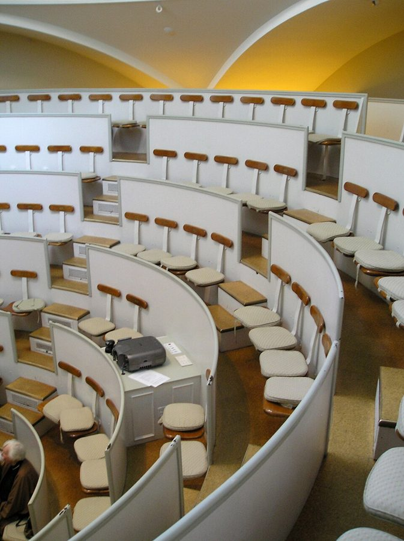
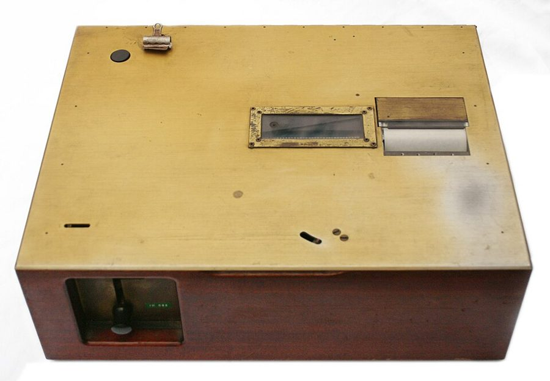
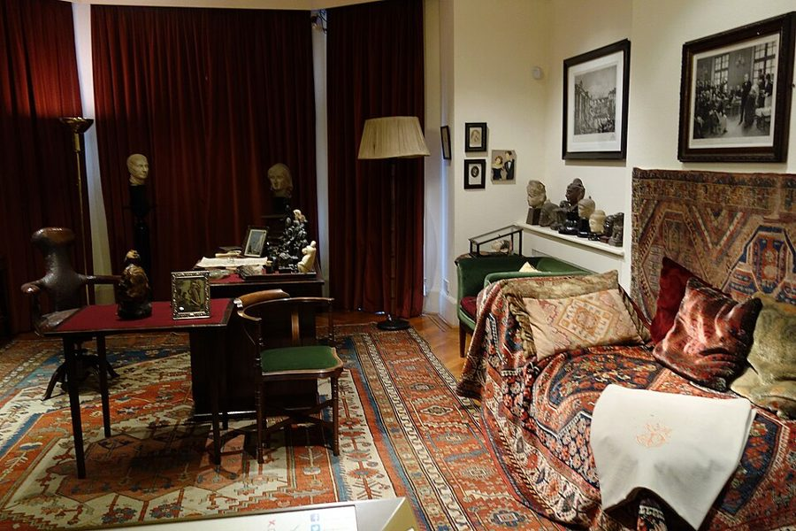
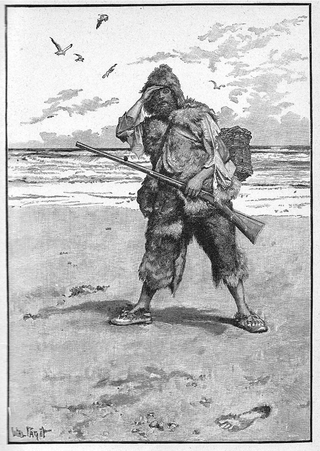

读之前
这一页是报告 7 和报告 8：3 月 11 日到 31 日，手术后的头三个星期，十六条。拼写和手术前差不多，几乎没有标点。读的时候抓两条线：一条是查理在等什么、天天问什么；一条是他照字面记下的别人的话：护士、研究生、面包店的同事。他写下的比他听懂的多，弦外之音要你自己去听。
32 岁，在唐纳面包店打杂，晚上去 Beekman 学院的成人班跟 Miss Kinnian 学读写。为了被选进实验做了一串测验：墨迹卡片里看不出图，看图编故事他说是撒谎，走迷宫一直输给白老鼠 Algernon。智商 68。妹妹 Norma 同意了手术。Nemur 说过，万一不成，就把他送回 Warren 州立之家。报告 6 停在手术之前，他一手攥着兔脚，一手攥着幸运硬币。
读的时候带着这几个问题。不用先找答案，读完回来对照「检查一下理解」。
护士 Hilda 为什么觉得这个手术不该做？查理听了以后怎么想？§2
查理一直在问同一个问题。Miss Kinnian、Burt、Strauss 各怎么回答他？§3 §4 §9
留意面包店和酒吧里那些玩笑话：查理怎么理解，你怎么理解？§8 §13
查理写到从前的事时，是被眼前的什么勾起来的？§5 §11 §14
分节地图
这一页有十六条带日期的报告：报告 7 三条，报告 8 十三条。读完一条打个勾；每条下面的英文是那一条开头的几个词，在 Kindle 里搜它就能跳过去。全页约 6400 词，分两次坐下读。
第一次坐下§1–§8 · 约 3400 词 · 3 月 11 日到 21 日，医院、大学、面包店
报告 7 · 3 月 11 日约 900 词 The operashun dint hert. Dr. Strauss … 留意手术室在查理眼里像什么，和标题那几个大写字是怎么拼对的。 3 月 12 日约 300 词 I dont have to rite PROGRESS … 护士 Hilda 的话。留意她搬出来的那个老故事。 3 月 13 日约 400 词 They changed my nerse today. This … 留意 Miss Kinnian 怎么解释手术到底有什么用。 报告 8 · 3 月 15 日约 200 词 Im out of the hospitil but … 很短。留意他说起测验、迷宫和 Algernon 的口气。 3 月 16 日约 500 词 I ate lunch with Burt at … 大学餐厅。留意 Burt 为什么不让他跟学生说实话。 3 月 17 日约 100 词 When I waked up this morning … 只有两段。留意他拿自己跟谁比。 3 月 20 日约 400 词 Im going back to werk at … 留意 Algernon 为什么总赢，和钱从哪里来。 3 月 21 日约 700 词 We had a lot of fun … 面包店。留意每一句玩笑，和唐纳先生讲的往事。 第二次坐下§9–§16 · 约 3000 词 · 3 月 24 日到 31 日，一台机器、一张沙发、一个派对、一只老鼠
3 月 24 日约 500 词 Prof Nemur and Dr Strauss came … 一台「不是电视的电视」。留意 Strauss 怎么说他变没变。 3 月 25 日约 200 词 That crazy TV kept me up … 留意他拿这台机器跟什么比。 3 月 26 日约 500 词 How am I gonna work in … 半夜被机器吵醒。留意他想起的是哪件事。 3 月 27 日约 200 词 Now that Im starting to have … 沙发上的治疗。留意他为什么觉得多此一举。 3 月 28 日约 700 词 I got a headake. Its not … 一个派对、一个梦。留意每个人在笑什么，和他自己的解释。 3 月 29 日约 500 词 I beet Algernon. I dint even … 留意 Algernon 吃东西之前要做什么，查理怎么看这件事。 3 月 30 日约 200 词 Tonite after werk Miss Kinnian came … 留意他对书里那张插图的猜测。 3 月 31 日约 100 词 Miss Kinnian teeches me how to … 只有一段。留意大写的 THREW、ENUFF、TUFF。
背景：书里默认你知道的事
按在书里出现的顺序排，标题前是节号。人名后面括号里是中译本的译名，读者想对照译本时用。
§1 坐满医生的手术室查理被推进的是一间带观摩席的手术室：手术台在中间，四周高处坐着一圈来看的医生，他说「像一场表演」。这种手术示教室从 19 世纪起就有，让医学生和同行看手术怎么做；英国英语至今把手术室叫 operating theatre（剧场）。他脸上那个「橡皮的东西」是麻醉面罩。下面几张卡片是医院和实验室里的人，只写你此刻已经知道的。

波士顿麻省总医院（Massachusetts General Hospital）Ether Dome 手术示教室里的座位，围着中间一层层升高。与本书无关，只是让你看看「坐在高处看手术」是什么样子。Adam Lenhardt，CC BY-SA 3.0，维基共享资源
Dr. Strauss 斯特劳斯医生 做手术的医生。报告 1 里就是他让查理把想到的、记得的都写下来。
Prof. Nemur 尼姆教授 实验的负责人，名叫 Harold。报告 5 里他最犹豫要不要用查理，最后点了头。
Burt Selden 伯特·塞尔登 穿白大褂做测验的人。墨迹卡片、迷宫和老鼠赛跑都是他带查理做的。
Miss Kinnian 纪尼安小姐 成人班的老师，向实验推荐了查理。全名 Alice Kinnian。
Algernon 阿尔吉侬 实验室的白老鼠，做过手术，走迷宫一直赢查理。
Hilda、Lucille 希尔达、露西尔 医院的护士。
§5 研究生、主修和出钱的基金会Burt 是研究生（graduate student）：读完四年本科，再读硕士或博士，常给教授的研究打下手。major 是本科生的主修专业，这个词也是军衔「少校」，查理只知道后一个意思。Beekman 学院是书里虚构的，报告 4 里查理去过它的心理学实验室（四楼）和养动物的实验室（五楼）。给这个实验出钱的 Welberg 基金会（Welberg Foundation）也是书里虚构的。
§6 Warren 之家和当时的说法报告 5 里 Nemur 说过：手术要是失败，就得把查理送回 Warren 州立之家（Warren State Home）去住。这个机构是书里虚构的，但类似的地方当时真有：美国各州办了许多给智障者住的州立学校、州立之家，不少人从小住进去。1967 年，这类州立机构里住着约 19.5 万人，近一半是孩子。书里的 retarded、center for retarded adults 是当时的正式说法，今天听来是冒犯的话，改说智力障碍（intellectual disability）；美国联邦法律在 2010 年改掉了旧用词。
§8 面包店里的人唐纳面包店（Donner’s Bakery）是前店后坊。作坊里有高低：学徒（apprentice）跟着学手艺，面包师（baker）烤面包，师傅头儿（head baker）管着大家。查理打杂：扫地、送货、洗厕所。下面几张卡片只写你此刻知道的。
Mr. Donner 唐纳先生 店主。报告 1 里查理说，他每星期给查理 11 块钱，想要面包蛋糕也可以拿。
Gimpy 金皮 面包师傅的头儿。报告 3 里查理打翻一盘面包卷，被他吼了一顿。gimpy 是俚语「瘸腿的」，这是个外号。
Joe Carp、Frank Reilly 乔·卡普、弗兰克·赖利 作坊里的同事。报告 6 里 Joe 替唐纳先生和面包店的人送来一个巧克力蛋糕。
Fanny Birden 范妮·比尔当 作坊里的女同事。
Uncle Herman 赫尔曼叔叔 从前照顾查理的人，替他在面包店找了这份工作，已经去世。
§9 像电视一样的「教学机器」Nemur 说他带来的是一台像电视的教学机器（teaching machine）。教学机器在当时是真东西：心理学家 Skinner（B. F. Skinner）1954 年展出过一台教小学算术的机器，1958 年在《科学》（Science）杂志上发表了《教学机器》一文。做法是把课程拆成一小步一小步的题，每答一题马上知道对错，按自己的速度往下走。书里这台会说话、放画面，还要在睡觉时开着，是虚构的。睡着时到底能不能学东西，报告 9 的页面再讲。

B. F. Skinner 设计的教学机器。Silly rabbit，CC BY 3.0，维基共享资源 §12 沙发上的谈话和「两个心」Strauss 让查理躺在沙发（couch）上，自己坐在旁边，听他想到什么说什么。这是精神分析的老做法，源自弗洛伊德（Sigmund Freud）：病人躺着随口说，医生坐在病人看不见的地方听，从话里找被压下去的东西。§13 Strauss 讲的「两个心」也出自这一派：意识（conscious）之外，还有一块自己察觉不到的心理活动。弗洛伊德本人用的词是 unconscious（无意识），后来不用 subconscious，也不同意把它说成另一个心。

伦敦弗洛伊德博物馆（Freud Museum London）里的书房，右边铺着毯子、堆着靠垫的就是那张躺椅。Zde，CC BY-SA 4.0，维基共享资源 §15 沙滩上的脚印Miss Kinnian 让查理读的是《鲁滨孙漂流记》（Robinson Crusoe，笛福，1719），写一个水手流落荒岛、独自活下来的故事。查理说插图里鲁滨孙拿着一把怪伞在看脚印。伞是鲁滨孙在岛上用兽皮自己做的；脚印是这本书最有名的一幕：他一个人在岛上过了许多年，有一天在沙滩上看见一个光脚的人的脚印，吓坏了。许多版本都给这一幕配了图。

Walter Paget 画的插图，印在 1894 年的一个捷克文版里：右下角沙地上就是那个脚印。这一幅里没有伞。Walter Paget，公有领域，维基共享资源 §16 through、enough、toughMiss Kinnian 教他看着一个词、闭上眼念到记住为止。他卡在 gh 上：through 读起来像 threw，enough、tough 却要读成 enuff、tuff。gh 在中古英语里发一个喉音，像德语 Bach 里的 ch；后来这个音在有的词里没了，在有的词里变成了 f，拼法却在印刷普及时定了下来，没跟着读音变。查理照读音拼的 laff，正是 laugh 今天的读法。
gh 不发音
gh 读成 f
through threw
night nite
though tho
enough enuff
tough tuff
laugh laff
粗体：查理照读音写过的拼法
本站示意图：gh 的两种下场。粗体的六个拼法，查理在这一页或报告 1–6 里都写过（threw 是报告 4 里的 all the way threw）：它们其实就是读音。 词与短语
三类：紫边的「查理拼的」是他拼错的词，先写还原的拼法；黄边的「每个字都认识」是熟词生义、俚语、别人话里的弦外之音；其余是这里用法特别的词。斜体小字是原句里的几个词，在 Kindle 里搜它就能找到原文，拼错的照拼错的抄。
§1 报告 7 · 3 月 11 日
bandiges
… there was bandiges on my eyes …
bandages 绷带
同一条里还有 bandigis、bandijis：同一个词，他每次拼得不一样。
sergery
… the door that says sergery.
surgery 外科手术（室）
门上印的字照理是 surgery，他写成了 sergery。
gone to
… I was gone to cry but …
going to 快要、就要
口语里 going to 说得快，查理照听到的写成 gone to（gone 本是 go 的过去分词）。同一条里他也写 gonna。
make all over
… gone to make all over but …
（吓得）要拉、要尿在身上
make 在儿童口语里指大小便。下半句 only wet a littel 是「只尿了一点」。译本：「好像要吐了。但我只吐了一点点」。译成了呕吐；原文说的是吓得失禁。
sientific methid
… on acount of the sientific methid.
scientific method 科学方法
Burt 的解释，查理转述：把一切记下来，以后才能再做一遍。
get canned
… theyll all get canned union or …
被开除
can 作动词本是「装罐」，俚语里是「炒鱿鱼」。union or no union：管你有没有工会撑腰。译本：「把他们做成灌头」。照字面译成了装罐头；原文是唐纳先生吓唬他们要开除。
ripublicans and demicrats
… the ripublicans and demicrats.
Republicans and Democrats 共和党和民主党
美国的两大党。作坊里的人边干活边争政治、争上帝，查理想加入这样的谈话。
fancy things
… Fancy things I bet. I …
高深讲究的东西
fancy 是「花哨、讲究」。查理想象聪明人的脑子里装着什么，只想得出这个词。
§2 3 月 12 日
not for all the tea in China
… for all the tea in china.
给多少好处也不干
Hilda 的意思是「说什么也不让人动我的脑子」。查理照字面接了一句：不是为了中国的茶，是为了变聪明。
rite
… mabey they got no rite to …
right 权利
rite 是另一个真词（仪式），长按查到的是它。查理把 right 和 write 都写成 rite。
tree of nowlege
… the sin with the tree of nowlege …
tree of knowledge 知善恶树
《圣经·创世记》：上帝不许亚当和夏娃（Adem and Eev）吃知善恶树的果子，他们吃了，被赶出伊甸园。Hilda 的意思：去拿上帝没给你的东西，就是罪。
the Fall
… the appel and the fall.
（人类的）堕落
神学说法，指亚当夏娃吃了禁果、失去乐园。不是秋天，也不是摔倒。
tampiring
… was tampiring with things they got …
tampering 乱动，擅自改动
tamper with 带贬义：动了不该动的东西、做手脚。
prey
… I better prey to god …
pray 祈祷
prey 是真词（猎物、捕食），长按查到的是它。
§3 3 月 13 日
blew eyes
… yellow hair and blew eyes.
blue eyes 蓝眼睛
blew 是 blow 的过去式，读音和 blue 一样。
matirnity ward
… in the matirnity ward by the …
maternity ward 产科病房
ward 是医院里的病区。
stick with someone
… it woud stick with me and …
（学到的东西）留得住，记得牢
stick 本义「粘住」。和同一句后半的 it dint stick so good 对照着读。
send someone away
… they woudnt send me away no …
把人送走（送去别处住）
常指送进寄宿学校或收容机构。从这句话看，查理觉得当年是因为自己不聪明才被送走的。
§4 报告 8 · 3 月 15 日
amazes
… Those amazes are stoopid. And …
mazes 迷宫
报告 4 里他把 maze 听成 amazed，这一页又写成 amazes、amazeds、amaze。
drawer
… I like to drawer the picturs …
draw 画
drawer 是真词（抽屉）。说的是报告 4 里那位女测试员的测验：画画可以，看图编故事他不干，因为那是撒谎。
pashent
… you got to be pashent Charlie …
patient 有耐心的
patient 还有一个意思是「病人」，他眼下正是。§6 他又写成 have pashents（patience，耐心），听上去和 patients（病人们）一样。
come along
… I was comming along fine.
进展顺利
不是「一起来」。是 Burt 对 Miss Kinnian 说的，Miss Kinnian 又告诉了查理。
§5 3 月 16 日
fool around
… They fool around somtimes but mostly …
打打闹闹
fool around 也可以指男女之间乱来；这里只是大学生在餐厅里闹着玩。
pass someone as if they were standing still
… pass them as if their standing still.
一下子就把他们甩在后面
赛跑的比方：对手像站着不动，你轻轻松松超过去。their 是 they’re。Burt 的话。
publisity
… their mussent be any publisity.
publicity 公开，见报
查理自己的解释是「那就是说要保密」。差不多对：Burt 的意思是这件事不能对外张扬。
no scientist is a great man to his colleagues
… no sientist is a grate man …
在同行眼里，没有哪个科学家是伟人
套的是西方老话 no man is a hero to his valet（仆人眼里无英雄）：离得近的人只看见你的毛病。Burt 用它解释 Nemur 为什么怕失败。译本：「没有棵学家对他的大学和学生是那么韦大」。colleegs 是 colleagues（同事），不是 college（大学）。
gradulate studint
… Burt is a gradulate studint and …
graduate student 研究生
多了一个 l。见「背景」§5。
majer
… he is a majer in psychology …
major 主修
major 又是「少校」。查理说他以为只有军队里才有 major。
§6 3 月 17 日
sick and tired
… but I feel sick and tired.
烦透了
固定说法，意思是「厌倦透顶」。查理这几天一直头疼，字面的「又病又累」也说得通。
§7 3 月 20 日
permanint
… he mite be smart permanint …
permanent 永久地
Strauss 的话，查理转述。报告 6 里 Nemur 也说过这个词，查理拼成 perminent。
good sine
… thats a good sine becaus we …
good sign 好兆头
sine 也是真词：数学里的正弦。
§8 3 月 21 日
put some brains in
… Charlie put some brains in.
往你脑袋里装了点脑子
Joe 指着他头上开刀的地方开的玩笑。言下之意：原来没有。
open a door the hard way
… open a door the hard way.
拿脑袋撞开门
the hard way 是「用最吃力的办法」。Frank 的玩笑：你头上那道伤，是拿头开门开出来的吧。
god rest his sole
… Uncle Herman god rest his sole …
God rest his soul 愿他安息
提到死去的人时跟一句。sole 是鞋底、唯一的，soul 才是灵魂。唐纳先生的话。
comited
… your mother had you comited to …
committed （经手续）送进收容机构
commit 在这里是正式用语，指把人送进精神病院、收容机构。见「背景」§6。
outside werk placmint
… releese you on outside werk placmint.
outside work placement 放到机构外面做工
placement 是「安置」。唐纳先生的话。
learn someone
… aprentise to lern him to be …
教某人
把 learn 当「教」用，是不合规范的口语。aprentise 是 apprentice（学徒）。
pull a Charlie Gordon
… He really pulled a Charlie Gordon …
干了件查理·戈登式的蠢事
pull a + 人名：做出那个人才会做的事。Gimpy 冲丢了生日蛋糕的 Ernie 喊「你想当个查理·戈登吗」，是同一个意思。查理写道，他从没丢过包裹。报告 9 的页面还会回到这句话。译本：「他那回真的整到查理·高登了」。成了某人捉弄查理，意思反了：原文是说某人干了件像查理那样的蠢事。
there’s lots of time for that
… theirs lots of time for that …
那个以后再说吧
字面是「时间还多着呢」，实际是客客气气地把请求挡回去，要反着读。唐纳先生接着说面包师的活很要紧、很复杂，「你不用操心这些」。
§9 3 月 24 日
teeching mashine
… its a teeching mashine that werks …
teaching machine 教学机器
见「背景」§9。
sore
… First he lookd sore again because …
恼火
sore 本义「疼」，美国口语里是「生气」。§12 Nemur 又 got sore 了一回。
questien authorety
… I was beginning to questien authorety.
question authority 质疑权威
Strauss 的话。查理说他不懂是什么意思，接着记下了 Nemur 的表情。
bite one’s lip off
… going to bite his lip off.
（气得）快把嘴唇咬下来
bite one’s lip 是咬住嘴唇、忍着不发作。查理加了个 off，Nemur 忍得更狠了。
§10 3 月 25 日
nutty
… And the nutty picturs. Wow.
疯疯癫癫的
nut 在俚语里指疯子，nutty 不是「有坚果味的」。
the late show
… watch the late show and the …
深夜电影节目
1950 年代纽约 CBS 的 2 频道深夜放老电影，节目就叫 The Late Show，再晚一档叫 The Late Late Show。§13 他把它推到了 late late late late late。
quiz show
… Maybe like quizz shows.
电视答题节目
1950 年代美国电视上答题赢奖金的节目很火，1958 年爆出节目作假的丑闻。查理想：要是看电视能变聪明，大概得看这种。
§11 3 月 26 日
retarded
… adult center for retarded pepul …
智力迟钝的（当时的说法）
1960 年代的正式用语，今天是冒犯人的话，改说智力障碍。见「背景」§6。
eddicated
… dont go getting so eddicated that …
educated 有学问的
Frank 半开玩笑的话：别学得太有学问，连老朋友都不理了。
make believe
… I made believe a lot …
假装
不是「使人相信」。查理马上自己解释了：我在别人面前装作认得字。
time clock
… by a big timeclock like the …
打卡钟
上下班插卡打时间的钟。面包店也有一台。
Mistre Gordon
… glad to meet you Mistre Gordon.
Mister Gordon 戈登先生
Miss Kinnian 第一次见他，叫的是「戈登先生」。
§12 3 月 27 日
theripy sesions
… go to theripy sesions with Dr …
therapy sessions 治疗（每一次面谈）
见「背景」§12。
§13 3 月 28 日
subconscious
… Theres the SUBCONSCIOUS and the CONSCIOUS …
潜意识
两个词全大写，后面跟着一句「（就是这么拼的）」。§13 稍后他去查了字典，查完还是不懂。见「背景」§12。
a lampshade on one’s head
… with a lampshade on my head …
头上顶着灯罩
美国人说起派对上喝醉出洋相，常举的画面就是头顶灯罩跳舞。
errand boy
… best janiter and errand boy he …
跑腿的伙计
janiter 是 janitor（打扫的杂工）。
cracked-up piece
… must be some cracked up piece …
脑子有毛病的娘们
cracked 是「疯了」；piece 是对女人的粗俗叫法，把人当成一件东西。Frank 说 Miss Kinnian 的话。
go for someone
… if she goes for Charlie and …
看上某人
不是「去拿」。
make out with
… are you making out with her.
和……亲热
当时的俚语，指搂抱亲吻，也可能指更进一步。查理说他不懂这是什么意思。
a card
… Charlie is a card when …
活宝，逗乐的人
card 不是卡片。
potted
… a card when hes potted.
喝醉了
俚语。查理对这句话的理解是：「我想这是说他们喜欢我。」
get rolled
… mabye I got rolled or the …
被人趁醉抢了
roll 在俚语里是「抢喝醉或睡着的人」。Joe 的猜测之一。译本：「也许我被车子撞了」。原文 rolled 和车无关，是遭了抢。
let someone have it
… the cop let me have it.
狠狠揍了某人一顿
Joe 的另一个猜测。查理说他不信警察会干这种事。
§14 3 月 29 日
parler
… old sofa in the parler.
parlor 客厅
老派说法，指家里待客的前屋。
the artist of the family
… going to be the artist of …
家里的大艺术家（反话）
painter 既是油漆匠，也是画家。Herman 叔叔是给人刷房子的 painter，查理说想当 painter，Norma 故意说成 artist 挖苦他。要反着读。
§15 3 月 30 日
at worst
… At werst you will have …
最坏也不过……
werst 是 worst。Miss Kinnian 的话，后半句是「你也拥有过它一阵子」。
dessert iland
… merooned on a dessert iland.
desert island 荒岛
dessert 是饭后甜点。merooned 是 marooned（被扔在荒岛上）。见「背景」§15。
查理的文字
报告 7 的标题是全大写的 PROGRESS REPORT 和 MARCH，拼对了：是护士教他的，他照抄，正文里还是拼错一成多。也是从这一篇起，出现了「写错、紧跟着改」：progis 后面跟着斜体的 progress，rip 后面跟着 reports。拼错率在 9% 到 16% 之间来回，3 月 16 日最高，那一条里有不少大学里听来的新词：polatics、riligon、publisity。
3 月 27 日到 29 日，曲线一下子降到 5%–7%：27 日出现他的第一个破折号（anyway—rite in the middle），28 日 remember 第一次拼对，29 日 write、operation 也对了。3 月 30 日又回升到 12.8%：teeching、nervus、dessert iland。变化不是一条直线。3 月 31 日他写到 ENUFF、TUFF，说那是他「开始变聪明之前」的写法：他在拿现在的自己和从前比。译本：「她说我常听不董你的一些字」。原文是查理说自己拼不好 through 这类字，through 读起来像 THREW；译本读成了 Miss Kinnian 说他念错字。
记忆拼图
查理的童年是一段一段想起来的。每段一张卡片：想起了什么，是被眼前的什么勾起来的。年纪是从书里推的，推不出来的写「年纪不详」。读过的页的卡片会汇总到记忆拼图 ，按年纪排好。
妈妈让他祷告 小时候妈妈常给他讲上帝，叫他向上帝祷告，求上帝让他好起来、别再生病。他不记得生的是什么病，猜是「不聪明」。是 Burt 说大学生们在谈宗教时勾起来的。
§5 走了六条街去报名 他问 Joe 怎么学会认字，Joe 笑他。Fanny 问了在 Beekman 上学的表亲，把成人班的名字写在纸上。他下班走去，买了份报纸带着，在门口害怕想回家，又转了回去。问的那位女士就是 Miss Kinnian。是夜里那台机器一遍遍念「记住」之后想起来的。
§11 梦：百货公司里走丢 Halloran’s 那一晚的梦。他和爸妈在一家大百货公司，妈妈的脸一片白，看不清。他走丢了，哭着在柜台之间跑。一个男人把他领进一间有长凳的大屋子，给他一根棒棒糖，说大孩子不该哭，爸妈会来找他。这是梦，书里没说是不是真事。
§13 睡在客厅沙发上的 Herman 叔叔 Herman 叔叔给人刷房子，人胖，上下梯子越来越慢，不好找活。没活干的时候，常睡在查理家客厅的旧沙发上。是 Strauss 说睡觉时脑子里变化最多、给他安眠药片时勾起来的。
§14 「家里的艺术家」 他跟妈妈说想像 Herman 叔叔一样当 painter，妹妹 Norma 说：查理要当家里的艺术家了。爸爸打了她一耳光，叫她别对哥哥这么刻薄。查理不懂 artist 是什么，猜不是好话。Norma 为挖苦他挨打，他每次都难受。紧接着上一段想起来的。
§14
爸爸
妈妈
Uncle Herman 刷房子的
Norma 妹妹
查理 32 岁
Mr. Donner 面包店老板
打她一耳光
让他祷告「好起来」 送他进 Warren
领他去面包店
最好的朋友
「家里的艺术家」
保他出来做工
本站示意图：到 3 月 31 日为止，书里交代过的家里人和身边人。「送他进 Warren」「保他出来做工」是 §8 唐纳先生讲的，不是查理想起来的。 值得停下来的句子
I never new before that I was dumber than a mouse.— §6，3 月 17 日，手术后一个多星期，还总输给 Algernon。本站译：我以前从来不知道，我比一只老鼠还笨。
new 是 knew。报告 4 里第一次看 Algernon 跑迷宫，他写的是「我不知道老鼠这么聪明」，那时他是在夸老鼠。现在同一只老鼠成了一把尺子，他第一次拿自己去量，量出来在下面。这一条里他恨测验、恨迷宫、恨 Algernon，不想再写报告，只想回面包店。
Maybe they went to find me.— §13，3 月 28 日，Halloran’s 酒吧那一晚。本站译：也许他们是去找我了。
Joe 和 Frank 让他去街角看看下没下雨，他回来，人都没了。读者看得出发生了什么，查理写下的是最好的那种解释。同一条后面，Joe 猜他是遭了抢或者挨了警察的打，他又说「我不信警察会干这种事」。一晚上两次，他都替别人往好处想。这六个词拼写全对，是整条里最难读的一句。
读完想一想
1. 护士 Hilda 说他们没有权利让查理变聪明。第二天她就被调去了产科，Lucille 说「在那里话多也没关系」。抛开她的宗教理由，她问的那件事有没有道理？
本站的看法 本站的看法：理由可以不同意，问题本身是真的。报告 5 里签字同意的是妹妹 Norma；手术台上，Strauss 对着满屋的医生讲要怎么做，查理写道他一句也听不懂。研究的人要他保密、要他天天写报告，这一页里他三次说这些报告很蠢，还是照写，因为有人付钱。他是自愿的，但他知道自己同意了什么吗？Hilda 被调走，这个问题并没有跟着走。
2. 查理觉得让 Algernon 每次先解一道题才能吃东西不对：「换了 Burt，他愿意吗？」这一页里，查理自己要做什么才能拿到什么？
本站的看法 本站的看法：他每晚下班去实验室做两小时测验、写报告，研究的人按星期付他钱，「像份兼职」；他说既然给钱，他就写。和 Algernon 那把每次都换的锁放在一起，很像。查理同情老鼠，却没把两件事放在一起看。作者让读者先看出来，这是这一页的写法。
3. 唐纳先生说这里一辈子都有查理的工作，Warren 他再也不用回去；查理想学当面包师，他又说「那个以后再说」。唐纳先生对查理好不好？
本站的看法 本站的看法：他守着对死去朋友的承诺十七年，生意不好也不辞查理，Frank 笑查理时他叫 Frank 闭嘴，这些都是真的好。可在他眼里，查理是要照看的人，不是能学手艺的人：学徒的位子给了新来的 Ernie，查理只能给 Ernie 打下手。好意和看低，可以在同一个人身上。
对照今天
成立 后来的事实印证了这个说法部分成立 一部分对，一部分被后来的事改了被改写 后来的事实推翻了它，或者完全变了样书里的说法：像查理这样的人，不住进 Warren 这样的州立机构，就得有人担保出来做工（唐纳先生，§8；Nemur，报告 5）
书里 唐纳先生说，Herman 死后查理的母亲把他送进了 Warren 之家，是他让机构放查理出来做工；他让查理放心，再也不用回去。报告 5 里 Nemur 也说，手术失败就送他回 Warren 住。
当时 1967 年，美国州立的智障者机构里住着约 19.5 万人，是历史最高点。纽约 Staten Island 的 Willowbrook 州立学校按 4000 人设计，1965 年住了 6000 人。
今天 1972 年电视记者 Geraldo Rivera 曝光了 Willowbrook 的状况，随后的诉讼在 1975 年和解，纽约州承诺把住院者转到社区；Willowbrook 1987 年关闭。1999 年美国最高法院在 Olmstead v. L.C. 案中判定：没有必要地把残障者隔离在机构里，违反《美国残疾人法》。到 2016 年，住在州立机构里的智障者降到约 1.95 万人，多数人住在家里或社区的小型住所。核对于 2026-10。依据：明尼苏达大学 RISP 项目的统计，Willowbrook 州立学校的史料（UPI 1987 年报道），美国国会研究服务处关于 Olmstead 案的报告。
书里的说法：人有两个心，潜意识和意识互不通气，所以会做梦（Strauss，§13，查理转述）
书里 查理问睡着了变聪明有什么用，Strauss 说两回事是一回事：人有潜意识和意识两个心，一个不告诉另一个它在干什么，它们连话都不说，所以人会做梦。
当时 1950–60 年代美国精神医学里精神分析影响很大。弗洛伊德在《梦的解析》（1900）里认为，梦是被压下去的愿望改头换面的表达。他本人反对把无意识说成第二个心。
今天 不进入意识的心理活动确实大量存在，认知心理学叫它「认知无意识」，但它和弗洛伊德那个装着被压抑愿望的无意识不是一回事。人为什么做梦，至今没有定论：1977 年 Hobson 和 McCarley 提出，梦是快速眼动睡眠时大脑被自发激活、再拼出故事的产物，直接挑战了弗洛伊德的说法。「两个心互不说话，所以做梦」，今天的研究者多半不会这么讲。核对于 2026-10。依据：Kihlstrom 在 Science 的论文（1987），Hobson 与 McCarley 在 American Journal of Psychiatry 的论文（1977），伦敦弗洛伊德博物馆对 subconscious 一词的说明。
检查一下理解
先在心里答，再点开。答错的那题，回书里把对应那一条再读一遍。
1.（§1）查理为什么到 3 月 11 日才写报告 7？ 手术后他眼睛和头上缠着绷带，三天看不见，这天绷带才从眼睛上拿掉。头上还缠着。
2.（§3）照 Miss Kinnian 的说法，手术到底有什么用？ 不是做完就聪明，还得下苦功学；手术的作用是让学到的东西留得住，不像以前那样学了就忘。查理听了有点失望。
3.（§5）Burt 为什么不让查理告诉大学生他要变聪明？ 万一失败，Nemur 怕被人笑，尤其怕出钱的 Welberg 基金会的人笑。Burt 跟学生说查理是来打扫心理系实验室的。
4.（§8）照唐纳先生的说法，查理是怎么到面包店来的？ 十七年前 Uncle Herman 把他领来，托唐纳先生照看。两年后 Herman 去世，母亲把查理送进了 Warren 之家，唐纳先生让机构放他出来，在面包店做工。
5.（§11）查理是怎么找到成人班的？ 他问 Joe 怎么学认字，Joe 笑他。Fanny 问了在 Beekman 上学的表亲，把名字写给他。他走了六条街，差点回家，又回去问一位女士，那就是 Miss Kinnian。
6.（§13）Halloran’s 那一晚，查理是怎么和 Joe、Frank 走散的？他以为是怎么回事？ 他们让他去街角看看下没下雨，他回来时人都不见了。他以为他们去找他了，到处找到很晚，迷了路，Flynn 太太说是一位警察送他回来的。第二天他头上有个包，身上青一块紫一块。
用一句话说这一页：
精彩回顾
隔几周回来，先看这几张卡片。想不起来的那张，点节号回到这一页，再回书里那一条。
一句话： 手术做完，查理什么也感觉不到，只是照字面记下别人的话；读者听得出的，他还听不出。
像一场表演 手术室四周高处坐满了来看的医生。Strauss 说你只要睡一觉就好，查理说：我怕的就是这个。
§1 全中国的茶 护士 Hilda 说，给她全中国的茶，她也不让人动她的脑子，还搬出了伊甸园的那棵树。查理回她：不是为了茶，是为了变聪明。他开始害怕惹上帝生气。
§2 比老鼠还笨 手术后一个多星期，迷宫还是输给 Algernon。他说自己恨测验、恨迷宫、恨那只老鼠，不想再写报告了。
§6 十七年 唐纳先生告诉他：是 Uncle Herman 把他领来的，Herman 死后他进过 Warren 之家，是唐纳把他保出来的。这里一辈子都有他的工作。
§8 去街角看看下没下雨 Halloran’s 酒吧里，他头顶灯罩在吧台上跳舞，拿拖把演示怎么拖厕所。回来时人都走了。「也许他们是去找我了。」
§13 软得像棉花 他第一次赢了 Algernon，又赢了八回。Burt 让他抱了抱它。听说它每次吃东西都得先开一把会变的锁，他说：考过试才能吃饭，这不对。
§14